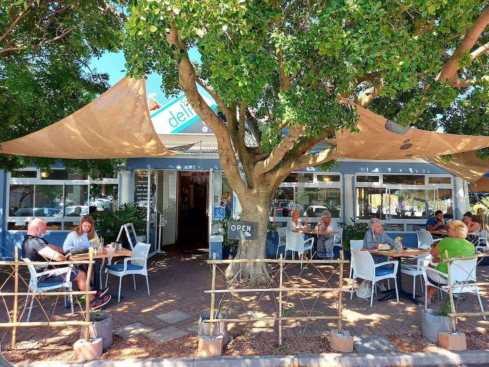
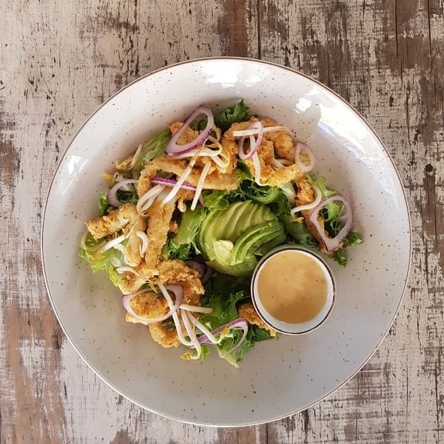
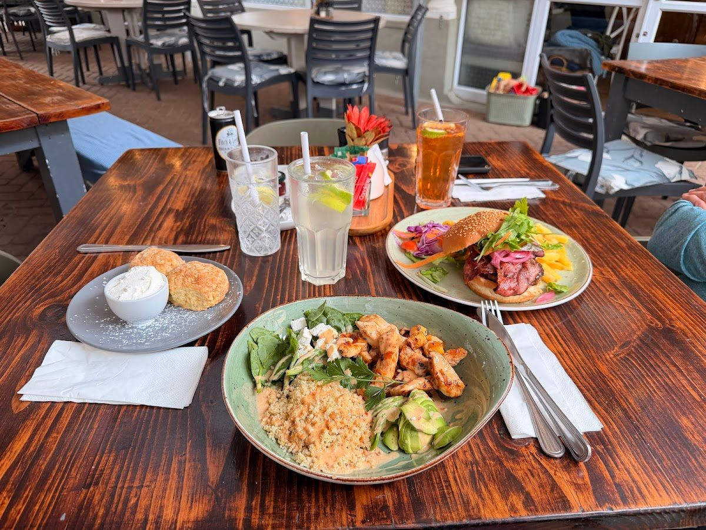
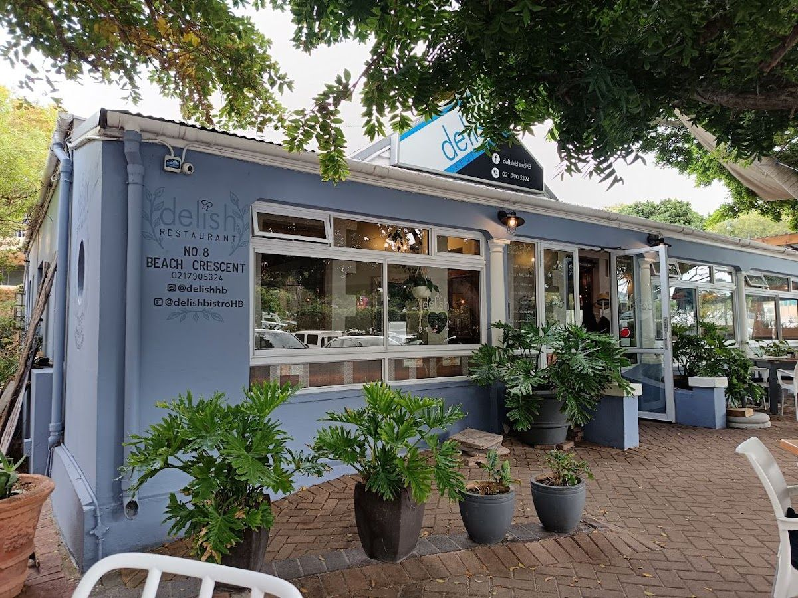

Delish Restaurant is a cherished dining spot located in the scenic Hout Bay, Cape Town. We offer a delightful menu that caters to both local and visiting food enthusiasts. Our restaurant is renowned for its inviting atmosphere and exceptional culinary creations that celebrate the flavors of the region.
Our journey began with a passion for bringing people together over delicious food. Over the years, we have crafted a menu that showcases the best of local ingredients, prepared with love and served with care. We believe in creating a dining experience that is as memorable as it is enjoyable.
At Delish Restaurant, our commitment to quality and service is unwavering. We value our community and strive to provide a welcoming space where everyone feels at home. Our promise is to continually delight our guests with fresh, innovative dishes and warm hospitality.
Discover the range of services we offer, each crafted to enhance your dining experience at Delish Restaurant.
Enjoy a cozy atmosphere with our dine-in service, where our skilled chefs prepare each dish to perfection using the freshest local ingredients.
Conveniently pick up your favorite dishes to enjoy at home. Simply place your order and we'll have it ready for you in no time.
Here is what our clients say about us.
"Tried this spot for breakfast and was pleasantly surprised! The hummus balsamic toast was absolutely delicious – full of flavor and a great start to the meal. Their coffee was spot-on too, just the way you want it in the morning. I also tried the haloumi salad, which was both innovative and satisfying – definitely something I’d order again. Unfortunately, the lemon dry cake missed the mark. It was quite dry and a bit hard to cut through – would’ve been much better if it were served moist and fresh. The ambience is lovely – calm, cozy, and well-suited for a relaxed meal. They also have plenty of options on the menu, which makes it worth revisiting. Just hoping for a better dessert experience next time!"— Anushri Tripathi, ⭐⭐⭐⭐
"Delish Restaurant is a fantastic spot for breakfast in Hout Bay! I recently enjoyed a wonderful morning meal there, and I was thoroughly impressed. The service was excellent, the food was delicious, and the atmosphere was bright and welcoming. I ordered the Avocado Toast with poached egg and it was cooked perfectly. The ingredients were fresh, and the presentation was lovely. The espresso was also excellent, a perfect start to the day. The staff was attentive and friendly, making sure I had everything I needed. The restaurant has a relaxed and pleasant atmosphere, ideal for a leisurely breakfast. If you're looking for a delicious and satisfying breakfast in Hout Bay, I highly recommend Delish Restaurant!"— Tristan Andres, ⭐⭐⭐⭐⭐
"Found this resto while our way to hout bay. The place is small but interesting. Very homey. Food is good."— Firdha, ⭐⭐⭐⭐⭐
"Shady, leafy upmarket spot close to Hout Bay beach. Excellent food, gently busy chatter."— Paul Custer, ⭐⭐⭐⭐⭐




We'd love to hear from you — reach out to us anytime.